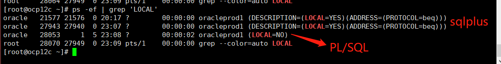

OCP12c
01. Oracle12cR2
- Repo Point
<Oracle-12.2>linuxx64_12201_database.zip
02. ./runInstaller
To be continued...
- 先单独点出一个本地图形化的调用，困扰了好久，按下列指令完成后，会在本地弹出图形化界面，前提是本地的ssh软件需要开启
Xserver服务!!!
[root@ocp12c ~]# xhost +
access control disabled, clients can connect from any HOST ⬅ 允许客户端访问主机IP的Xserver
[root@ocp12c ~]# su - oracle
Last login: Sat Jan 18 00:32:43 CST 2020 on pts/3
[oracle@ocp12c ~]$ export DISPLAY=192.168.17.1:0.0
[oracle@ocp12c ~]$ cd /soft/database
[oracle@ocp12c ~]$ ./runInstaller
Starting Oracle Universal Installer...
Checking Temp space: must be greater than 500 MB. Actual 146736 MB Passed
Checking swap space: must be greater than 150 MB. Actual 7079 MB Passed
Checking monitor: must be configured to display at least 256 colors. Actual 16777216 Passed
Preparing to launch Oracle Universal Installer from /tmp/OraInstall2020-01-18_12-37-03AM. Please wait ...03. Oracle12c 架构
实例和内存结构
Instance 实例其实就是物理内存段的一部分，相当于软件进程.kernel.shmall 为共享内存大小，按照192.168.62.103测试库来看，可以配置为 4294967296 个page（4KB/page）.kernel.shmmax 用于定义单个共享内存段的最大值，kernel.shmmax 设置应该足够大，能在一个共享内存段下容纳下整个的 SGA ，设置的过低可能会导致需要创建多个共享内存段，这样可能导致系统性能的下降，最大值为16GB（在大多数情况下，该值应该比SGA大）.按照192.168.62.103测试库（内存128G）来看，可以配置为 88719476736（82GB）.
53477376 pages / 219043332096 bytes
Ex 内核参数，系统内存4G，下面为对应内核配置大小（出自官方白皮书）
实例内存由下面两组内存参数动态调整：SGA（total_mem × 80%） × 80%，一般不超过物理内存的1/2.PGA（total_mem × 80%） × 20%.
| SGA参数 | × | MEM参数 |
|---|---|---|
| × | × | MEMORY_MAX_TARGET（静态）⬇ |
| x | SGA_MAX_SIZE |
MEMORY_TARGET（动态）⬇ |
| × | SGA_TARGET⬇ |
PGA_AGGREGATE_TARGET（PGA_AGGREGATE_LIMIT）⬇ |
| × | DB_CACHE SHARED_POOL LARGE_POOL … |

关于SGA和PGA的一点配置总结
Tips 相关总结不一定正确，仍需实验验证.
[相关博客：关于oracle11G的自动内存管理MEMORY_TARGET和MEMORY_MAX_TARGET]（https://blog.csdn.net/fjseryi/article/details/50818843）MEMORY_MAX_TARGET 参数定义了 MEMORY_TARGET 可以达到的最大值，若未设置，则默认等于 MEMORY_TARGET 的值；该值为数据库初始化参数，不可动态调节，通过调整Spfile中的MEMORY_MAX_TARGET并重启实例，可以达到调整的目的.MEMORY_TARGET SGA + PGA. Oracle总共可以使用的共享内存大小，不可超过 MEMORY_MAX_TARGET 的大小，默认为0；该值可以动态调节，无需重启实例.动态内存管理 使用动态内存管理时，MEMORY_TARGET下的 SGA_TARGET 和 PGA_AGGREGATE_TARGET 代表它们各自内存区域的最小设置，要让Oracle完全控制内存管理，上述两个参数应该设置为0.
MEMORY_TARGET设置为非0值：
→ 设置了SGA/PGA_AGGREGATE_TARGET，则两个参数将各自作为最小值，作为各自的初始化目标值.
→ 未设置SGA/PGA_AGGREGATE_TARGET，则根据DB状态按照一个固定比例分配：
SGA = MEMORY_TARGET * 60%.
PGA_AGGREGATE_TARGET = MEMORY_TARGET * 40%.
→ 仅设置了两个中的一个，则 SGA = MEMORY_TARGET - PGA_AGGREGATE_TARGET；反之类似.MEMORY_TARGET设置为0或未设置：
→ 设置了SGA/PGA_AGGREGATE_TARGET，则自动调节SGA中的 Shared pool、Buffer Cache、Redo Log Buffer、Java Pool、Larger Pool等内存空间的大小；PGA 则依赖PGA_AGGREGATE_TARGET的大小。SGA/PGA_AGGREGATE_TARGET不能自动增长和自动缩小.
→ 未设置SGA/PGA_AGGREGATE_TARGET，第1点SGA中的各二级内存配置需要被明确设定，SGA/PGA_AGGREGATE_TARGET不能自动增长和自动缩小.
→MEMORY_MAX_TARGET设置而MEMORY_TARGET= 0，这种情况不太懂？？？
SGA下的各种缓冲区（二级内存配置）
Data Buffer Cache数据高速缓冲区，又分级为：Dirty Buffer/Free Buffer/Pinned Buffer
→Dirty Buffer脏缓冲区，当数据库发生 DML（Insert、Update、Delete）操作时，会对缓冲区内容进行修改，这样缓冲区的内容就会和相对应的数据文件不一致，这时，缓冲区标识为“脏缓冲区”.
→Free Buffer自由缓冲区，当“脏缓冲区”的内容被写入数据文件后，因为该缓冲区与相应数据文件部分内容一致，所以将这些缓冲区称为“自由缓冲区”；当执行 SELECT 语句时，会将对应数据文件部分数据读取到数据高速缓存的相应缓冲区，因为缓冲区与数据块内容完全一致，所以这些缓冲区也被称为“自由缓冲区”.
→Pinned Buffer忙缓冲区，指服务器进程正在访问的缓冲区.
→ 为了防止数据库高速缓冲区空间不够用，Oracle 会将脏缓冲区中的数据写入对应的数据文件中（Redo.log），以腾出空间给新的数据.
Ex 高速缓冲区的大小管理
# 显示高速缓冲区的大小
# "0" 表示数据库自动管理，这里表示设置的是最小值。
show parameter db_cache_size
# 修改数据库高速缓冲区大小
alter system set db_cache_size=500m;
# flush缓冲区，生产库慎用
alter system flush buffer_cacheRedo Log Buffer重做日志缓冲区（循环文件，redo01.log/redo02.log/redo03.log），由一条条重做项构成，大小初始化参数为LOG_BUFFER.
Shared PoolSGA的共享池，内含库缓存、数字字典缓冲区（执行计划的依赖来源）等.
数据字典缓冲区数据库参考信息（数据库结构/用户等）
库高速缓存共享SQL区和共享PL/SQL区.
Ex Shared Pool 展示
--当用户执行语句时
SELECT * FROM emp WHERE empno=7788;
--Oracle 需要查询数据字典 dba_tables 确定表 emp 是否存在
--如果该表已经存在，还需要查询数据字典 dba_tab_columns 确定列 empno 在表 emp 中是否存在
SELECT * FROM dba_tab_columns WHERE column_name = 'EMPNO';
--然后才能生成执行语句的过程（执行计划），这些定义在首次查询时存入数据字典高速缓冲区.大型池 Java池 流池
主要是大型池的大小影响数据备份效率.
PGA（了解即可）
PGA 私有SQL、会话内存、SQL工作区.PGA_AGGREGATE_LIMIT PGA_AGGREGATE_TARGET 以外的一个PGA参数，用于进行PGA使用率的硬性限制，当超过当前PGA时，Oracle会自动终止会话以保持合适的PGA内存.
ALTER SYSTEM SET PGA_AGGREGATE_LIMIT=2G;
ALTER SYSTEM SET PGA_AGGREGATE_LIMIT=0; --disables the hard limitIn-Memory Column Store
In-Memory area适用于：
→ 资源表中的行非常多，但查询结果行不多.
→ 资源表中的列很多，但查询结果的列很少.
→ 查询聚集数据
数据更新时相关进程的走势
用户进程：用户机器上的进程，在服务端体现为进程状态中的LOCAL和非LOCAL.
服务进程：
LOCAL进程，连接用户进程和实例后台进程：
LGWRDBWnCKPT/SMONPMON实例的一部分实例：
SGAPGA等
Origin ➡ Buffer_cache
New ➡ Redo_buffer Redo_buffer ➡ Buffer_cache

Redo_buffer ➡ redo01~03.log Buffer_cache ➡ Origin && Update SCN && 数据库同步
# redo01~03.log
[oracle@ocp12c prod1]$ ll /u01/app/oracle/oradata/prod1 # $ORACLE_BASE/oradata/prod1
total 3607664
-rw-r----- 1 oracle oinstall 10600448 Dec 28 12:53 control01.ctl
-rw-r----- 1 oracle oinstall 209715712 Dec 28 12:52 redo01.log
-rw-r----- 1 oracle oinstall 209715712 Dec 28 11:46 redo02.log
-rw-r----- 1 oracle oinstall 209715712 Dec 28 11:47 redo03.log
-rw-r----- 1 oracle oinstall 817897472 Dec 28 12:51 sysaux01.dbf
-rw-r----- 1 oracle oinstall 933240832 Dec 28 12:50 system01.dbf
-rw-r----- 1 oracle oinstall 67117056 Dec 28 09:36 temp01.dbf
-rw-r----- 1 oracle oinstall 1289756672 Dec 28 12:50 undotbs01.dbf
-rw-r----- 1 oracle oinstall 5251072 Dec 28 11:51 users01.dbfredo01~redo03.log VS undo.data
Tips redo.log/undo.data之间的一点关联和解析，需结合上述后台进程进行理解
04. 实例管理
实例加载
NOMOUNT进程启动
$ORACLE_HOME/dbs/ 下的 spfile.ora/init .ora
打开alter_.log/trace文件
分配SGA，启动进程MOUNT挂载状态
定位所有控制文件
通过加载控制文件，定位实例数据文件/Redo日志在哪里，但不介入（不判断是否真的存在），加载后台实例/动态性能视图，OPEN介入数据文件，打开数据库数据文件/Redo日志
--NOMOUNT&OPEN
SYS@prod1> startup nomount
SYS@prod1> alter database mount
SYS@prod1> alter database open
--MOUNT&OPEN
SYS@prod1> startup mount
SYS@prod1> alter database open
--STARTUP
SYS@prod1> startup实例关闭
SYS@prod1> shutdown immediate
SYS@prod1> shutdown abort ⬅断电，生产环境应避免使用，数据库不会进行同步动态性能视图
- 数据库在MOUNT阶段就激活的功能，因为是动态视图，所以其数值的变化会贯穿整个数据库的启动状态.
$ORACLE_HOME/dbs
spfile<sid>.ora/init<sid>.ora初始化文件，后者为文本可读格式的静态文件，后续有详细介绍.
ll $ORACLE_HOME/dbs/
total 10712
-rw-rw---- 1 oracle oinstall 1544 Dec 28 19:03 hc_prod1.dat
-rw-rw---- 1 oracle oinstall 1544 Dec 7 14:22 hc_prodcdb.dat
-rw-r--r-- 1 oracle oinstall 3079 May 15 2015 init.ora
-rw-r--r-- 1 oracle oinstall 1225 Dec 28 19:34 initprod1.ora
-rw-r----- 1 oracle oinstall 24 Nov 13 09:28 lkPROD1
-rw-r----- 1 oracle oinstall 24 Nov 13 10:27 lkPRODCDB
-rw-r----- 1 oracle oinstall 3584 Nov 13 10:05 orapwprod1
-rw-r----- 1 oracle oinstall 3584 Nov 13 11:21 orapwprodcdb
-rw-r----- 1 oracle oinstall 10928128 Dec 28 18:08 snapcf_prod1.f
-rw-r----- 1 oracle oinstall 3584 Jan 4 09:40 spfileprod1.ora
-rw-r----- 1 oracle oinstall 3584 Dec 23 23:11 spfileprodcdb.ora05. 实例文件详解
控制文件 Control Files
-- SYS@prod1> DESC V$DATAFILE;
-- SYS@prod1> DESC DBA_DATA_FILES;
--查看控制文件路径及数量
SYS@prod1> show parameter control
NAME TYPE VALUE
------------------------------------ ----------- ------------------------------
control_file_record_keep_time integer 7
control_files string /u01/app/oracle/oradata/prod1/control01.ctl, /u01/app/oracle/fast_recovery_area/prod1/control02.ctl
control_management_pack_access string DIAGNOSTIC+TUNING- 控制/新增文件备份
--二进制备份
SYS@prod1> ALTER DATABASE BACKUP CONTROLFILE TO '/home/oracle/control.ctl';
--文本备份
SYS@prod1> ALTER DATABASE BACKUP CONTROLFILE TO trace AS '/home/oracle/control.ctl';
<img src="control_ctl.png" title="数据更新流程" alt="数据更新流程">
--新增控制文件，数据库进入mount
SYS@prod1> startup mount
ORACLE instance started.
Total System Global Area 1560281088 bytes
Fixed Size 8621088 bytes
Variable Size 989856736 bytes
Database Buffers 553648128 bytes
Redo Buffers 8155136 bytes
Database mounted.
--查看现有控制文件地址及数量
SYS@prod1> show parameter control
NAME TYPE VALUE
------------------------------------ ----------- ------------------------------
control_file_record_keep_time integer 7
control_files string /u01/app/oracle/oradata/prod1/control01.ctl, /u01/app/oracle/fast_recovery_area/prod1/control02.ctl
--新增控制文件control03.ctl 并关闭实例
SYS@prod1> alter system set control_files='/u01/app/oracle/oradata/prod1/control01.ctl','/u01/app/oracle/fast_recovery_area/prod1/control02.ctl','/u01/app/oracle/oradata/prod1/control03.ctl' scope=spfile;
SYS@prod1> shutdown immediate
--复制control01文件并rename，和参数中的配置同步
--记住，赋值的文件需是实例关闭后，同步过SNC号的.ctl文件
cp /u01/app/oracle/oradata/prod1/control01.ctl /u01/app/oracle/oradata/prod1/control03.ctl
--重启实例
[oracle@ocp12c ~]$ sqlplus / as sysdba
SYS@prod1> startup mount
ORACLE instance started.
Total System Global Area 1560281088 bytes
Fixed Size 8621088 bytes
Variable Size 989856736 bytes
Database Buffers 553648128 bytes
Redo Buffers 8155136 bytes
Database mounted.
--查看新增control文件后的control参数状态
SYS@prod1> show parameter control
NAME TYPE VALUE
------------------------------------ ----------- ------------------------------
control_file_record_keep_time integer 7
control_files string /u01/app/oracle/oradata/prod1/control01.ctl, /u01/app/oracle/fast_recovery_area/prod1/control02.ctl, /u01/app/oracle/oradata/prod1/control03.ctl
SYS@prod1> alter database open;- 控制文件部分丢失或完全丢失的情况下重建控制文件
➡ 关闭实例/删除/启动/查看告警/关闭实例
➡ 复现：先删除某control文件
- 启动到mount即可（mount阶段已开始介入control文件）
[oracle@ocp12c ~]$ sqlplus / as sysdba
SQL*Plus: Release 12.2.0.1.0 Production on Sat Dec 28 18:43:07 2019
Copyright (c) 1982, 2016, Oracle. All rights reserved.
Connected to an idle instance. ➡ 再次强调，此时数据库是关闭的！！！后续才可以进行正确的copy！！！
SYS@prod1> startup mount
ORACLE instance started.
Total System Global Area 1560281088 bytes
Fixed Size 8621088 bytes
Variable Size 989856736 bytes
Database Buffers 553648128 bytes
Redo Buffers 8155136 bytes
ORA-00205: error in identifying control file, check alert log for more info可以去按照提示，去告警日志里看下原因

恢复丢失的控制文件（在数据库实例完全关闭的情况下！！！）
SYS@prod1> shutdown immediate
ORA-01507: database not mounted
ORACLE instance shut down
# 进入到控制文件所在目录，该目录下也包括一些初始化参数文件/密码文件等
cd $ORACLE_BASE/oradata/prod1/
--复制未丢失的control文件并重命名至control01.ctl
cp control03.ctl control01.ctl
--再次重启
SYS@prod1> startup mount- 全部控制文件丢失，需在nomount状态下恢复控制文件，前提是知道redo.log和相关datafile文件的路径
--找到redo.log和相关datafile文件的路径！！！
SYS@prod1> shutdown immediate;
SYS@prod1> startup nomount;
--执行以下语句
SYS@prod1>
CREATE CONTROLFILE REUSE DATABASE "PROD1" NORESETLOGS ARCHIVELOG
MAXLOGFILES 16
MAXLOGMEMBERS 3
MAXDATAFILES 100
MAXINSTANCES 8
MAXLOGHISTORY 292
LOGFILE
GROUP 1 '/u01/app/oracle/oradata/prod1/redo01.log',
GROUP 2 '/u01/app/oracle/oradata/prod1/redo02.log',
GROUP 3 '/u01/app/oracle/oradata/prod1/redo03.log'
-- STANDBY LOGFILE
DATAFILE
'/u01/app/oracle/oradata/prod1/system01.dbf',
'/u01/app/oracle/oradata/prod1/sysaux01.dbf',
'/u01/app/oracle/oradata/prod1/undotbs01.dbf',
'/u01/app/oracle/oradata/prod1/users01.dbf'
CHARACTER SET AL32UTF8;
--打开数据库
SYS@prod1> alter database open;
--下面两步可以在备份的control.ctl文件内找到
--含RESETLOGS参数打开数据库
--简单来说就是加载联机归档日志并重置其log sequence为1，前提是它们存在的话；不存在则创建.
SYS@prod1> ALTER DATABASE OPEN RESETLOGS;
--重新启用临时表空间
-- Commands to add tempfiles to temporary tablespaces.
-- Online tempfiles have complete space information.
-- Other tempfiles may require adjustment.
SYS@prod1> ALTER TABLESPACE TEMP ADD TEMPFILE '/u01/app/oracle/oradata/prod1/temp01.dbf'
SIZE 67108864 REUSE AUTOEXTEND ON NEXT 655360 MAXSIZE 32767M;RESETLOGSThe RESETLOGS option is always required after incomplete media recovery or recovery using a backup control file. Resetting the redo log does the following:- Archives the current online redo logs (if they are accessible) and then erases the contents of the online redo logs and resets the log sequence number to 1. For example, if the current online redo logs are sequence 1000 and 1001 when you open RESETLOGS, then the database archives logs 1000 and 1001 and then resets the online logs to sequence 1 and 2.
- Creates the online redo log files if they do not currently exist.
- Reinitializes the control file metadata about online redo logs and redo threads.
- Updates all current datafiles and online redo logs and all subsequent archived redo logs with a new RESETLOGS SCN and time stamp.
Because the database will not apply an archived log to a datafile unless the RESETLOGS SCN and time stamps match, the RESETLOGS prevents you from corrupting datafiles with archived logs that are not from direct parent incarnations of the current incarnation.
数据文件 Data Files
--查看相关数据文件及路径
select T.bytes/1024/1024/1024 "TB/(GB)", T.* FROM DBA_DATA_FILES t /*where t.tablespace_name like 'UNDOTBS1%'*/ ORDER BY 2 desc;
--创建特定属性的表空间，后续也有类似的罗列
CREATE TABLESPACE SHIN DATAFILE '/u01/app/oracle/oradata/prod1/shin01.dbf' SIZE 10M
AUTOEXTEND ON NEXT 10M
EXTENT MANAGEMENT LOCAL
UNIFORM SIZE 1M
SEGMENT SPACE MANAGEMENT MANUAL; ⬅ 默认是AUTO
ALTER TABLESPACE SHIN ADD DATAFILE '/u01/app/oracle/oradata/prod1/shin02.dbf' SIZE 10M;联机重做日志文件（归档日志） redo.log
- 修改归档日志路径
mkdir /u01/app/oracle/archivelog
SYS@prod1> alter system set log_archive_dest_1='location=/u01/app/oracle/archivelog' socpe=spfile;
SYS@prod1> alter system switch logfile; ⬅手动切换下日志试试，看看新路径下会不会有指定格式的归档日志
SYS@prod1> show parameter log_archive_dest_1;
NAME TYPE VALUE
------------------------------------ ----------- ------------------------------
log_archive_dest_1 string location=/u01/app/oracle/archivelog
log_archive_dest_10 string
log_archive_dest_11 string
log_archive_dest_12 string
log_archive_dest_13 string
log_archive_dest_14 string
log_archive_dest_15 string
log_archive_dest_16 string
log_archive_dest_17 string
log_archive_dest_18 string
log_archive_dest_19 string
--手动切换日志
SYS@prod1> alter system switch logfile;
--进入相关日志路径，查看是否产生了新的日志
ls $ORACLE_BASE/archivelog
--redo log日志组的增加
alter database add logfile group 4 ('/u01/app/oracle/oradata/prod1/redo04_01.log','/u01/app/oracle/oradata/prod1/redo04_02.log') size 50M;
--redo log组新增成员
alter database add logfile member'/u01/app/oracle/oradata/prod1/redo04_03.log'to group 4;
--redo log组删除成员，删除时当前redo log成员的状态为不为CURRENT即可
--查看当前日志成员状态
SYS@prod1> select group#, thread#, sequence#, bytes, members, archived, status from v$log;
--if status(the member that wait to be drop) = CURRENT
SYS@prod1> alter system switch logfile;
--drop logfile member
ALTER DATABASE DROP LOGFILE MEMBER '/u01/app/oracle/oradata/prod1/redo04_03.log';
--删除redo log日志组，删除组的条件比删除成员的条件严苛，需要状态为 INACTIVE
--如何将状态切换至INACTIVE? 手动切换当前的 redo.log 日志组，并触发checkpoint同步实例
SYS@prod1> alter system switch logfile;
SYS@prod1> select group#, thread#, sequence#, bytes, members, archived, status from v$log;
--触发checkpoint，同步redo.log内的数据至数据文件内
SYS@prod1> alter system checkpoint;
--此时再执行日志组的删除
SYS@prod1> alter database drop logfile group 4;06. 操作系统文件详解
初始化文件
spfile<sid>.ora
init<sid>.ora
口令文件
归档文件
--归档路径查询，这里的log_archive_dest_n为自己配置的路径，一般配置log_archive_dest_1即可
SYS@prod1> show parameter archive
NAME TYPE VALUE
----------------------------- ----------- ------------------------------
archive_lag_target integer 0
log_archive_config string
log_archive_dest string
log_archive_dest_1 string location=/u01/app/oracle/archivelog
... ... ...
log_archive_dest_7 string
log_archive_dest_8 string
log_archive_dest_9 string
log_archive_dest_state_1 string enable
log_archive_dest_state_10 string enable
... ... ...
log_archive_dest_state_17 string enable
log_archive_dest_state_18 string enable
log_archive_dest_state_19 string enable
log_archive_dest_state_2 string enable
... ... ...
log_archive_dest_state_3 string enable
log_archive_dest_state_9 string enable
log_archive_duplex_dest string
log_archive_format string %t_%s_%r.dbf
log_archive_max_processes integer 4
log_archive_min_succeed_dest integer 1
log_archive_start boolean FALSE
log_archive_trace integer 0
standby_archive_dest string ?#/dbs/archTrace File & Alter Log File
--alert文件和.trc文件如下所示
--第一部分.trc文件在如下命令显示的路径下
SYS@prod1> show parameter dump
NAME TYPE VALUE
------------------------------------ ----------- ------------------------------
background_core_dump string partial
background_dump_dest string /u01/app/oracle/product/12.2.0/db_1/rdbms/log
core_dump_dest string /u01/app/oracle/diag/rdbms/prod1/prod1/cdump
max_dump_file_size string unlimited
shadow_core_dump string partial
user_dump_dest string /u01/app/oracle/product/12.2.0/db_1/rdbms/log
--user_dump_dest路径下有两组实例的.trc文件
cd /u01/app/oracle/product/12.2.0/db_1/rdbms/log
--alert文件和第二部分.trc文件在下面的路径下
--下面这个路径下也有相关的.trc和alert文件，但是和上述的.trc文件不太类似，生成的时间周期不太一样
cd /u01/app/oracle/diag/rdbms/prod1/prod1/trace- 两组路径下有不同的.trc文件，有何区别.
07. 数据库逻辑结构
行片段/块/区/段/表空间
行链接 单行数据超过单数据库容纳时，产生行链接.行迁移 数据发生update时，产生行迁移，更新的原始行rowid不会发生变化，但整行数据会迁移至新的数据块中，旧的块内会保存指向新块的地址.
CREATE TABLESPACE <TBSPACE_NAME> DATAFILE '/u01/app/oracle/oradata/prod1/TBSPACE_NAME01.dbf' size 10M
AUTOEXTEND ON NEXT 10M ⬅ 是指表空间的数据文件大小自动扩展，最大扩充至32G
EXTENT MANAGEMENT LOCAL ⬅ 区的管理是LOCAL
UNIFORM SIZE 1M ⬅ 区以后是每次1MB来扩展，即表的实际大小按1MB大小递增
SEGMENT SPACE MANAGEMENT MANUAL ⬅ 默认是AUTO
--TABLESPACE GROUP GROUP_TMP ⬅ 一半临时表空间可以配置为临时表空间组，回避单临时表空间不足的问题表空间和数据文件
SYSTEM 不能脱机 offline / 不能置为只读 read only / 不能重命名 / 不能删除
create tablespace shin datafile '/u01/'TABLESPACE 常规表空间，建议按需求功能配置不同表空间
CREATE TABLESPACE SHIN DATAFILE '/u01/app/oracle/oradata/prod1/shin01.dbf' SIZE 10M
AUTOEXTEND ON NEXT 10M
EXTENT MANAGEMENT LOCAL
UNIFORM SIZE 1M
SEGMENT SPACE MANAGEMENT MANUAL;TEMP TABLESPACE 临时表空间
SYS@prod1> create temporary tablespace tempts1 tempfile '/home/oracle/temp1_02.dbf' size 2M
tablespace group group1;
SYS@prod1> create temporary tablespace tempts2 tempfile '/home/oracle/temp2_02.dbf' size 2M
tablespace group group2;
SYS@prod1> select * from dba_tablespace_groups;
GROUP_NAME TABLESPACE_NAME
------------------------------ ------------------------------
GROUP1 TEMPTS1
GROUP2 TEMPTS2
--将表空间从一个临时表空间组移动到另外一个临时表空间组：
SYS@prod1> alter tablespace tempts1 tablespace group GROUP2 ;
SYS@prod1> select * from dba_tablespace_groups;
GROUP_NAME TABLESPACE_NAME
------------------------------ ------------------------------
GROUP2 TEMPTS1
GROUP2 TEMPTS2段（表/索引/簇等）
区
块
高水位线（(High Water Mark, HWM）
HWM 原则上HWM只会增大，不会缩小.
相关影响
→ 全表扫描通常要读出直到 HWM 标记的所有的属于该表数据库块，即使该表中没有任何数据.
→ 即使 HWM 以下有空闲的数据库块，键入在插入数据时使用了 append 关键字，则在插入时使用 HWM 以上的数据块，此时 HWM 会自动增大（插入速度快）.
→ HWM会直接影响到相关表空间的大小，即resize表空间时会失败.
→ 通常需要我们去优化这些高水位线但实际数据很少的表.HWM的修正
--实际数据低于高水位线30%的表的查询
SELECT TABLE_NAME,(BLOCKS*8192/1024/1024)"理论大小 M",
(NUM_ROWS*AVG_ROW_LEN/1024/1024/0.9)"实际大小 M",
round((NUM_ROWS*AVG_ROW_LEN/1024/1024/0.9)/(BLOCKS*8192/1024/1024),3)*100||'%' " 实际使用率%"
FROM DBA_TABLES where blocks>100 and (NUM_ROWS*AVG_ROW_LEN/1024/1024/0.9)/(BLOCKS*8192/1024/1024)<0.3 order by (NUM_ROWS*AVG_ROW_LEN/1024/1024/0.9)/(BLOCKS*8192/1024/1024) desc
--重建并收缩
alter table te123 enable ROW MOVEMENT; --表重建，行迁移
alter table te123 shrink space cascade;
--alter database datafile '/u01/app/oracle/oradata/prod1/te123' resize 15M;08. 数据库网络配置
监听器（后台服务）
监听器提供数据库对外连接的服务器信息、协议、端口.
主机IP/端口号/全局数据库名/Oracle主目录/SID
全局数据库名：DB_NAME.DB_DOMAIN
# 这部分实验不太理解，先不做解释
SYS@prod1> alter system set db_domain='oracle.com' scope=spfile;
SYS@prod1> shutdown immediate
SYS@prod1> startup
# SYS@prod1> alter system set global_name=TRUE;
# 网络配置文件位置
cd $ORACLE_HOME/network/admin/# 监听控制
su - oracle
lsnrctl status
lsnrctl stop
lsnrctl start
静态监听 配置文件中有 SID_LIST_LISTENER 就是静态监听.静态注册 监听程序启动时读取 listener.ora 文件内容中的实例名(SID_NAME)和服务名（GLOBAL_DBNAME）注册.
到监听器中动态监听 动态注册默认只注册到默认的监听器上（监听器名称是 LISTENER、端口是 1521、协议是 TCP），如果需要向使用其他协议和端口的监听器注册，则要配置 local_listener 参数动态注册发生的时间：数据库实例启动的时候、每隔一分钟动态注册的进程：PMON.手动发起注册命令 alter system register;
非标准监听配置（LISTENER，port: 1522）& 客户端网络服务名（TNS）
监听器提供数据库对外连接的服务器信息、协议、端口.
➡ 增加监听器 LISTENER1，暂时不增加静态监听到1522端口
➡ 增加监听tnsname别名 aaa_1（等同于别名监听实验）
# 增加建
cd $ORACLE_HOME/network/admin/
vim listener.ora
# listener.ora
listener.ora
# listener.ora Network Configuration File: /u01/app/oracle/product/12.2.0/db_1/network/admin/listener.ora
# Generated by Oracle configuration tools.
LISTENER =
(DESCRIPTION_LIST =
(DESCRIPTION =
(ADDRESS = (PROTOCOL = TCP)(HOST = ocp12c)(PORT = 1521))
(ADDRESS = (PROTOCOL = IPC)(KEY = EXTPROC1521))
)
)
# 新增的监听器 LISTENER1
LISTENER1 =
(DESCRIPTION_LIST =
(DESCRIPTION =
(ADDRESS = (PROTOCOL = TCP)(HOST = ocp12c)(PORT = 1522))
)
)
SID_LIST_LISTENER =
(SID_LIST =
(SID_DESC =
(GLOBAL_DBNAME = prod1)
(ORACLE_HOME = /u01/app/oracle/product/12.2.0/db_1)
(SID_NAME = prod1)
)
(SID_DESC =
(GLOBAL_DBNAME = prodcdb)
(ORACLE_HOME = /u01/app/oracle/product/12.2.0/db_1)
(SID_NAME = prodcdb)
)
)
######
vim tnsnames.ora
# tnsnames.ora
aaa_1 =
(DESCRIPTION =
(ADDRESS = (PROTOCOL = TCP)(HOST = ocp12c)(PORT = 1522))
(CONNECT_DATA =
(SERVER = DEDICATED)
(SERVICE_NAME = prod1)
)
)
######- 默认的LOCALL监听不会注册至1522端口，故需要我们修改系统参数，修改local_listener参数并手动执行动态注册操作
SYS@prod1> alter system set local_listener='aaa_1'; ⬅ 这里的本地监听器，可以使用listener.ora中的别名.
System altered.
SYS@prod1> alter system register; ⬅ 这里的本地监听器，可以使用listener.ora中的别名.
System altered.- 启动新监听（port: 1522）
[oracle@ocp12c admin]$ lsnrctl start LISTENER1
[oracle@ocp12c admin]$ lsnrctl status LISTENER1
LSNRCTL for Linux: Version 12.2.0.1.0 - Production on 04-JAN-2020 11:59:41
Copyright (c) 1991, 2016, Oracle. All rights reserved.
⬇ 这里的监听端口为1522
Connecting to (DESCRIPTION=(ADDRESS=(PROTOCOL=TCP)(HOST=ocp12c)(PORT=1522)))
STATUS of the LISTENER
------------------------
Alias LISTENER1
Version TNSLSNR for Linux: Version 12.2.0.1.0 - Production
Start Date 04-JAN-2020 11:57:18
Uptime 0 days 0 hr. 2 min. 22 sec
Trace Level off
Security ON: Local OS Authentication
SNMP OFF
Listener Parameter File /u01/app/oracle/product/12.2.0/db_1/network/admin/listener.ora
Listener Log File /u01/app/oracle/diag/tnslsnr/ocp12c/listener1/alert/log.xml
Listening Endpoints Summary...
(DESCRIPTION=(ADDRESS=(PROTOCOL=tcp)(HOST=ocp12c)(PORT=1522)))
(DESCRIPTION=(ADDRESS=(PROTOCOL=tcps)(HOST=ocp12c)(PORT=5500))(Security=(my_wallet_directory=/u01/app/oracle/admin/prod1/xdb_wallet))(Presentation=HTTP)(Session=RAW))
Services Summary...
Service "prod1" has 1 instance(s). ⬅ 服务名
Instance "prod1", status READY, has 1 handler(s) for this service... ⬅ 实例名
Service "prod1XDB" has 1 instance(s).
Instance "prod1", status READY, has 1 handler(s) for this service...
The command completed successfully
Tips Oracle12c中修改了 local_listener 后，且未将新端口监听添加至静态监听List的情况下，1521和新增且配置了参数后的非1521端口，均可正常本地监听并完成本地连接.
- 修改前
SYS@prod1> alter system set local_listener='aaa_1'; ⬅ 这里的本地监听器，可以使用listener.ora中的别名.
SYS@prod1> alter system register; ⬅ 这里的本地监听器，可以使用listener.ora中的别名.
SYS@prod1> show parameter local
NAME TYPE VALUE
------------------------------------ ----------- ------------------------------
local_listener string aaa_1
parallel_force_local boolean FALSE修改后
客户端连接测试
- 拓展：增加服务名，用于建立用户与实例的桥梁
SYS@prod1> show parameter service_names
NAME TYPE VALUE
------------------------------------ ----------- ------------------------------
service_names string prod1
SYS@prod1> alter system set service_names='prod1,aaa';
SYS@prod1> show parameter service_names
NAME TYPE VALUE
------------------------------------ ----------- ------------------------------
service_names string prod1,aaa- 总结：
服务名服务名的建立连接了用户进程与实例，我们可以给一组实例配置多个服务名，并且动态注册到监听中，用于非本地客户端的连接. 如拓展中所示，我们给实例添加了一组额外的服务名，这时候我们便可以通过这组service_name去连接实例.相当于是这样: 在数据库服务器和客户端之间有一监听程序（Listener），在监听程序中，会记录相应数据库对应的服务名（一个数据库可能对应有多个服务名），当客户端需要连接数据库时，只需要提供服务名，就可以建立客户端和服务器之间的连接.
SYS@prod1> show parameter service_names
NAME TYPE VALUE
------------------------------------ ----------- ------------------------------
service_names string prod1,aaa
-- 通过新增的aaa连接prod1实例
sqlplus hr/oracle@192.168.73.101:1521/aaa
sqlplus hr/oracle@192.168.73.101:1521/prod1
--这里的service_name = prod1， ⬆
--碰巧和实例名prod1相同，不要混淆！！！ - 过分麻烦的IP/port/service_name/系统目录等连接信息，会让实例的连接变得繁琐，通过tnsnames.ora中的网络别名配置，有效简化了实例连接. 别名样例详见
客户端网络服务名（TNS）.
-- tnsnames.ora
prod1 = ⬅ 简单连接命名 = prod1
(DESCRIPTION =
(ADDRESS = (PROTOCOL = TCP)(HOST = ocp12c)(PORT = 1521))
(CONNECT_DATA =
(SERVER = DEDICATED)
(SERVICE_NAME = prod1)
)
)
aaa_1 = ⬅ 简单连接命名 = aaa_1
(DESCRIPTION = ⬇ 这里的监听端口为非标准的1522
(ADDRESS = (PROTOCOL = TCP)(HOST = ocp12c)(PORT = 1522))
(CONNECT_DATA =
(SERVER = DEDICATED)
(SERVICE_NAME = aaa)
⬆ --这里监听的service_name = aaa，
--等同于prod1，因为实例prod1我们配置了两组service_name
)
)
------
--通过配置tnsnames.ora，开启别名连接
sqlplus hr/oracle@192.168.73.101:1521/aaa
sqlplus hr/oracle@192.168.73.101:1521/prod1
--上述连接方式简化为
sqlplus hr/oracle@aaa_1
sqlplus hr/oracle@prod1- 新增监听器LISTENER1并且配置local_listener，使得非标准端口动态注册成为现实，详见
非标准监听配置（LISTENER，port: 1522）. 这里有一个12c可能存在的新特性，配置local_listener为 1521 端口下的aaa_1（即LISTENER1）后，原始 1521端口下的默认监听器LISTENER依旧允许用户登入. 详见非标准监听配置（LISTENER，port: 1522）➡ 修改后 & 客户端连接测试
sqlplus hr/oracle@192.168.73.101:1521/prod1
sqlplus hr/oracle@prod1 ⬅ (prod1 ➡ service_name: prod1 ➡ instance:prod1)
sqlplus hr/oracle@192.168.73.101:1522/aaa
sqlplus hr/oracle@aaa_1 ⬅ (aaa_1 ➡ service_name: aaa ➡ instance:prod1)09. CDB/PDB
CDB VS PDB
- CDB中的PDB文件
数据文件的共享：12c之前，PDB复用CDB的所有文件，包括redo和control复用CDB的文件，spfile/密码等文件，PDB复用CDB的文件
--PDB复用部分CDB数据文件
cd /u01/app/oracle/oradata/prodcdb
--spfile/密码等文件，PDB复用CDB的文件
cd /u01/app/oracle/product/12.2.0/db_1/dbsTips12.2之后的版本，PDB默认有自己的undo表空间（local undo），若没有自己的undo，则会share CDB$ROOT 中的undo.
小结- 控制文件/联机重做日志/参数文件属于CDB（根：CDB&ROOT），不属于PDB，PDB复用.
- 位于根而不在PDB中的文件：RAC数据库所有实例的undo，Oracle提供的元数据，CDB视图，CDB资源管理计划.
- 位于PDB而不在根中的文件：PDB系统表空间（含sysaux），PDB临时/用户表空间.
疑问PDB的undo应该也是属于各自PDB的，12.1中共享，12.2之后各自独立.（解决）
CDB/PDB（配置/增删）
- PDB&CDB查看/切换
--查看当前是否为PDB
--若有PDB$SEED，则说明当前为PRODCDB
SYS@prodcdb> show pdbs;
CON_ID CON_NAME OPEN MODE RESTRICTED
---------- ------------------------------ ---------- ----------
2 PDB$SEED READ ONLY NO
3 PRODPDB READ WRITE NO
SYS@prodcdb> show conn_name;
CON_NAME
------------------------------
CDB$ROOT
SYS@prodcdb> show con_id;
CON_ID
------------------------------
1
--切换至PDB
SYS@prodcdb> alter session set container=PRODPDB;
Session altered.
--查看，此时只有当前的PDB
SYS@prodcdb> show pdbs;
CON_ID CON_NAME OPEN MODE RESTRICTED
---------- ------------------------------ ---------- ----------
3 PRODPDB READ WRITE NO
SYS@prodcdb> show conn_name;
CON_NAME
------------------------------
PRODPDB
SYS@prodcdb> show con_id;
CON_ID
------------------------------
3
--切换回CDB
SYS@prodcdb> alter session set container=CDB$ROOT;
Session altered.
SYS@prodcdb> show pdbs;
CON_ID CON_NAME OPEN MODE RESTRICTED
---------- ------------------------------ ---------- ----------
2 PDB$SEED READ ONLY NO
3 PRODPDB READ WRITE NO- 新建/删除PDB的service_name
--在容器数据库下可以进行全局的服务名查询
SYS@prodcdb> select name, pdb from cdb_services;
SYS@prodcdb> select name, pdb from v$services;
NAME PDB
---------- ----------
SYS$BACKGR CDB$ROOT
OUND
SYS$USERS CDB$ROOT
prodcdbXDB CDB$ROOT
prodcdb CDB$ROOT
prodpdb PRODPDB
shin PRODPDB
--尝试给CDB下的PDB实例新建一个service_name
--查看创建前PDB对应的service_name
SYS@prodcdb> alter session set container=PRODPDB;
Session altered.
SYS@prodcdb> col name format a10;
SYS@prodcdb> col pdb format a10;
SYS@prodcdb> select name, pdb from cdb_services;
NAME PDB
---------- ----------
prodpdb PRODPDB
--创建新的PDB服务名
SYS@prodcdb> exec dbms_service.create_service('shin','shin');
PL/SQL procedure successfully completed.
SYS@prodcdb> select name,pdb from cdb_services;
NAME PDB
---------- ----------
prodpdb PRODPDB
shin PRODPDB- 但是此时去查看系统监听，并没有看到服务名shin（Instance：prodpdb）的服务被动态注册到监听中，需要启动新的服务.
--启动新PDB下的服务名
SYS@prodcdb> exec dbms_service.START_SERVICE('shin');
PL/SQL procedure successfully completed.Tips先关闭服务，再删除服务.
SQL> alter session set container=prodpdb;
Session altered.
SQL> exec dbms_service.stop_service('shin');
PL/SQL procedure successfully completed.
SQL> exec dbms_service.delete_service('shin');- CDB/PDB下连接各用户
--切换实例环境，目前有该服务器上有两组数据库实例，prod1 & prodcdb
[oracle@ocp12c ~]$ . oraenv
ORACLE_SID = [prodpdb] ? prodcdb
The Oracle base remains unchanged with value /u01/app/oracle
[oracle@ocp12c ~]$ sqlplus / as sysdba
SQL*Plus: Release 12.2.0.1.0 Production on Sat Jan 11 11:21:32 2020
Copyright (c) 1982, 2016, Oracle. All rights reserved.
Connected to:
Oracle Database 12c Enterprise Edition Release 12.2.0.1.0 - 64bit Production
SYS@prodcdb>
--开始测试连接方式
--服务名方式连接
--conn usr/pwd@ip:port/service_name
SYS@prodcdb> conn test/oracle@ocp12c:1521/prodpdb;
Connected.
SYS@ocp12c:1521/prodcdb> conn test/oracle@ocp12c:1521/prodpdb;
Connected.
TEST@ocp12c:1521/prodpdb> conn test/oracle@ocp12c:1521/shin;
Connected.
TEST@ocp12c:1521/shin> conn sys/oracle@ocp12c:1521/prodcdb as sysdba;
Connected.
SYS@ocp12c:1521/prodcdb>
--TNS别名方式连接
--conn usr/pwd@tns
SYS@ocp12c:1521/prodcdb> conn test/oracle@prodpdb;
Connected.
TEST@prodpdb> conn sys/oracle@prodcdb as sysdba;
Connected.
SYS@prodcdb>
--PDB PRODPDB 对应的新服务名shin 没有在tnsnames.ora中设置服务名别名，故不能用本方法连接- OMF VS 非OMF
OMFOracle文件管理，文件名系统生成，从/u01/app/oracle/oradata后的路径就开始自动生成，不合并到CDB容器路径/u01/app/oracle/oradata/prodcdb下，而是自动生成新的路径/u01/app/oracle/ORADATA/prodcdb），详情看下图.
- 新建CDB
手工方式创建
新子句 SEED FILE_NAME_CONVERT
新实例参数 PDB_FILE_NAME_CONVERT
OMF模式（数据实例参数） DB_CREATE_FILE_DEST
DBCA方式创建
dbca -silent -createDatabase -templateName General_Purpose.dbc -responseFile NO_VALUE \
-gdbname PRODCDB2 -sid PRODCDB2 \ ⬅ 数据库名 & 实例名
-createAsContainerDatabase TRUE \ ⬅ 创建为CDB
-sysPassword oracle -systemPassword oracle \
-datafileDestination '/u01/app/oracle/oradata' \ ⬅ 数据路径配置
-recoveryAreaDestination '/u01/app/oracle/flash_recovery_area' \ ⬅ redo.log路径配置，原始路径名为`/u01/app/oracle/fast_recovery_area`
-redoLogFileSize 50 \
-storageType FS \
-characterset ZHS16GBK -nationalCharacterSet AL16UTF16 \
-sampleSchema true \
-totalMemory 1024 \
-databaseType OLTP \
-emConfiguration NONEDBCA方式删除
dbca -silent -deleteDatabase -sourceDB PRODCDB2 -sysDBAUserName sys -sysDBAPassword oracle -forceArchiveLogDeletion非DBCA方式创建（老师口述，暂未做实验）
ALTER PLUGGABLE DATABASE PRODPDB OPEN RESTRICTED;
drop database;
- 新建PDB（从PDB$SEED生成PDB）
位置子句
OMF模式CREATE_FILE_DEST
SYS@PRODCDB2> create pluggable database PRODPDB2 admin user oracle identified by oracle CREATE_FILE_DEST='/u01/app/oracle/oradata';非OMF模式FILE_NAME_CONVERT
SYS@PRODCDB2> create pluggable database PRODPDB3 admin user oracle identified by oracle roles=(dba) FILE_NAME_CONVERT=('/u01/app/oracle/oradata/PRODCDB2/pdbseed','/u01/app/oracle/oradata/PRODCDB2/prodpdb3');
Pluggable database created.
SYS@PRODCDB2> show pdbs;
CON_ID CON_NAME OPEN MODE RESTRICTED
---------- ------------------------------ ---------- ----------
2 PDB$SEED READ ONLY NO
3 PRODPDB2 MOUNTED
4 PRODPDB3 MOUNTED ⬅ 非位置子句
OMF模式 DB_CREATE_FILE_DEST
SYS@PRODCDB2> alter session set DB_CREATE_FILE_DEST='/u01/app/oracle/oradata';
Session altered.
SYS@PRODCDB2> create pluggable database prodpdb4 admin user oracle identified by oracle default tablespace users;
Pluggable database created.
SYS@PRODCDB2> show pdbs;
CON_ID CON_NAME OPEN MODE RESTRICTED
---------- ------------------------------ ---------- ----------
2 PDB$SEED READ ONLY NO
3 PRODPDB2 MOUNTED
4 PRODPDB3 MOUNTED
5 PRODPDB4 MOUNTED ⬅ 非OMF模式 PDB_FILE_NAME_CONVERT
SYS@prodcdb2> alter session set pdb_file_name_convert='/u01/app/oracle/oradata/PRODCDB2/pdbseed','/u01/app/oracle/oradata//PRODCDB2/prodpdb5';
Session altered.
SYS@prodcdb2> create pluggable database prodpdb5 admin user oracle identified by oracle;
Pluggable database created.
SYS@prodcdb2> show pdbs;
CON_ID CON_NAME OPEN MODE RESTRICTED
---------- ------------------------------ ---------- ----------
2 PDB$SEED READ ONLY NO
3 PRODPDB2 MOUNTED
4 PRODPDB3 MOUNTED
5 PRODPDB4 MOUNTED
6 PRODPDB5 MOUNTED- 克隆PDB（clone from PDB existed）
位置子句
OMF模式：
SYS@prodcdb> create pluggable database PRODPDB6 from PRODPDB CREATE_FILE_DEST = '/u01/app/oracle/oradata';
Pluggable database created.
SYS@prodcdb> show pdbs;
CON_ID CON_NAME OPEN MODE RESTRICTED
---------- ------------------------------ ---------- ----------
2 PDB$SEED READ ONLY NO
3 PRODPDB READ WRITE NO
4 PRODPDB6 MOUNTED非OMF模式：
SYS@prodcdb> create pluggable database prodpdb7 from prodpdb file_name_convert=('/u01/app/oracle/prodcdb/prodpdb','/u01/app/oracle/oradata/prodcdb/prodpdb7');
Pluggable database created.
SYS@prodcdb> show pdbs;
CON_ID CON_NAME OPEN MODE RESTRICTED
---------- ------------------------------ ---------- ----------
2 PDB$SEED READ ONLY NO
3 PRODPDB READ WRITE NO
4 PRODPDB6 READ WRITE NO
7 PRODPDB7 MOUNTED非位置子句
OMF模式：
SYS@prodcdb> alter pluggable database PRODPDB7 open;
Pluggable database altered.
SYS@prodcdb> show pdbs;
CON_ID CON_NAME OPEN MODE RESTRICTED
---------- ------------------------------ ---------- ----------
2 PDB$SEED READ ONLY NO
3 PRODPDB READ WRITE NO
4 PRODPDB6 MOUNTED
7 PRODPDB7 READ WRITE NO
SYS@prodcdb> alter session set DB_CREATE_FILE_DEST ='/u01/app/oracle/oradata';
Session altered.
SYS@prodcdb> create pluggable database prodpdb8 from prodpdb7;
Pluggable database created.
SYS@prodcdb> show pdbs;
CON_ID CON_NAME OPEN MODE RESTRICTED
---------- ------------------------------ ---------- ----------
2 PDB$SEED READ ONLY NO
3 PRODPDB READ WRITE NO
4 PRODPDB6 MOUNTED
5 PRODPDB8 MOUNTED
7 PRODPDB7 READ WRITE NOTips一个全局PDB启动时，由OMF创建格式带来的BUG
非OMF模式：
SYS@prodcdb> alter session set DB_CREATE_FILE_DEST='';
Session altered.
SYS@prodcdb> show parameter create;
NAME TYPE VALUE
------------------------------------ ----------- ------------------------------
create_bitmap_area_size integer 8388608
create_stored_outlines string
db_create_file_dest string
db_create_online_log_dest_1 string
db_create_online_log_dest_2 string
db_create_online_log_dest_3 string
db_create_online_log_dest_4 string
db_create_online_log_dest_5 string
SYS@prodcdb> alter session set pdb_file_name_convert='/u01/app/oracle/oradata/prodcdb/p/oracle/oradata/prodcdb/prodpdb9';
Session altered.
SYS@prodcdb> show parameter pdb_file_name_convert;
NAME TYPE VALUE
------------------------------------ ----------- ------------------------------
pdb_file_name_convert string /u01/app/oracle/oradata/prodcdb/prodpdb7, /u01/app/oracle/oradata/prodcdb/prodpdb9
SYS@prodcdb> create pluggable database prodpdb9 from prodpdb7;
Pluggable database created.
SYS@prodcdb> show pdbs
CON_ID CON_NAME OPEN MODE RESTRICTED
---------- ------------------------------ ---------- ----------
2 PDB$SEED READ ONLY NO
3 PRODPDB READ WRITE NO
4 PRODPDB6 MOUNTED
5 PRODPDB8 MOUNTED
6 PRODPDB9 MOUNTED
7 PRODPDB7 READ WRITE NO
SYS@prodcdb> show pdbs;
CON_ID CON_NAME OPEN MODE RESTRICTED
---------- ------------------------------ ---------- ----------
2 PDB$SEED READ ONLY NO
3 PRODPDB READ WRITE NO
4 PRODPDB6 MOUNTED
5 PRODPDB8 MOUNTED
6 PRODPDB9 MOUNTED
7 PRODPDB7 READ WRITE NO
8 PRODPDB10 READ WRITE NO- 删除PDB
SYS@prodcdb> alter pluggable database prodpdb9 close immediate;
Pluggable database altered.
SYS@prodcdb> show pdbs;
CON_ID CON_NAME OPEN MODE RESTRICTED
---------- ------------------------------ ---------- ----------
2 PDB$SEED READ ONLY NO
3 PRODPDB READ WRITE NO
4 PRODPDB6 MOUNTED
5 PRODPDB8 MOUNTED
6 PRODPDB9 MOUNTED
7 PRODPDB7 READ WRITE NO
8 PRODPDB10 READ WRITE NO
SYS@prodcdb> drop pluggable database prodpdb9 including datafiles;
Pluggable database dropped.
SYS@prodcdb> show pdbs;
CON_ID CON_NAME OPEN MODE RESTRICTED
---------- ------------------------------ ---------- ----------
2 PDB$SEED READ ONLY NO
3 PRODPDB READ WRITE NO
4 PRODPDB6 MOUNTED
5 PRODPDB8 MOUNTED
7 PRODPDB7 READ WRITE NO
8 PRODPDB10 READ WRITE NO- 12.2热克隆
上述克隆方式均为read write模式下的热克隆.
多租户CDB/PDB的相关管理（配置/增删）
PDB相关拔插实验还未完成
CDB关闭与开启（类似于单实例操作）
PDB关闭与自启
SAVE STATE打开指定PDB，使用SAVE STATE子句保存PDB的最后打开状态.
ALTER PLUGGABLE DATABASE PRODPDB OPEN;
ALTER PLUGGABLE DATABASE PRODPDB SAVE STATE;
--所有PDB均自启
ALTER PLUGGABLE DATABASE all OPEN;
ALTER PLUGGABLE DATABASE all SAVE STATE;
--还原，不再保存PDB的最后打开状态
ALTER PLUGGABLE DATABASE all DISCARD STATE;
--立即关闭
alter pluggable database prodpdb close immediate;
--除去某个PDB外均关闭
alter pluggable database all except prodpdb close;
--正常全关闭
alter pluggable database all close;
--断电（PDB不同于CDB，断电后需要恢复介质！！！）
alter pluggable database prodpdb close abort;
alter pluggable database prodpdb open;
recover database --recover datafile
--或在 rman 里执行：recover pluggable database prodpdb;- PDB开启模式
--受限模式打开（sys/system用户）
ALTER PLUGGABLE DATABASE PRODPDB OPEN RESTRICTED;
--只读
ALTER PLUGGABLE DATABASE PRODPDB OPEN READ ONLY;
--读写
ALTER PLUGGABLE DATABASE PRODPDB OPEN;
--PDB_SPFILE$- 临时还原（不太用）
ALTER SYSTEM SET TEMP_UNDO_ENABLE=TRUE;
10. 安全
Schema profile
- 常用的两组profile参数修改
alter PROFILE default LIMIT PASSWORD_LIFE_TIME unlimited;
alter PROFILE default LIMIT FAILED_LOGIN_ATTEMPTS 100;密码限制
资源限制
权限
权限分类系统权限/对象权限
grant connect,resource,create view to test- 系统权限
with admin option系统权限转授，即被赋予某权限的用户拥有赋予其它schema相同权限的能力.Tips系统权限被收回时，后续级联的权限不会被回收！！！
create user test1 identified by oracle;
create user test2 identified by oracle;
grant connect,resource,create view to test1 with admin option;
sqlplus test1/oracle@prod1;
grant connect,resource,create view to test2;- 对象权限
with grant option对象权限转授，即被赋予某权限的用户拥有赋予其它schema相同权限的能力.Tips对象权限被收回时，后续级联的权限会被回收！！！
角色
角色即不同权限的集合体.
本博客所有文章除特别声明外，均采用 CC BY-SA 3.0协议 。转载请注明出处！